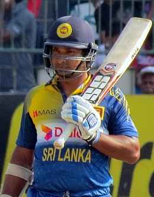

Kumar Sangakkara
A Sri Lankan cricket commentator, cricketer, former captain of the Sri Lanka national cricket team and a model.

Sangakkara is a left-handed top-order batsman and was wicket-keeper
for many years in his career.
Here's some records of Kumar Sangakkara:
-
Test matches
- Sixth highest aggregate of runs (12,400) in 134 matches at an Average of 57.40
- Second most double centuries in a career – Sangakkara has 11 double centuries in Tests, second only to 12 by Don Bradman.
- Fourth highest number of centuries – Sangakkara has 38 centuries in 134 matches.
- Highest average (qualification 5000 runs.) by a Sri Lankan – Sangakkara (57.40)- fifth highest overall after Donald Bradman, Ken Barrington, Wally Hammond and Garfield Sobers.
- Half centuries – Sangakkara has 52 half-centuries in 134 matches. He is ninth in the list.
- First player to score 150+ scores in four consecutive Test matches.
- Fastest 8,000 runs – Sangakkara (152 innings)
- Fastest 9,000 runs – Sangakkara (172 innings)
- Joint fastest to 10,000 runs – Sangakkara along with Brian Lara and Sachin Tendulkar (195 innings)
-
One-Day Internationals
- Aggregate runs (14,234 in 404 matches at an Average of 41.98) – Sangakkara is second on the list.
- First Sri Lankan to pass 14,000 runs.
- Most half centuries – Sangakkara has 93 half-centuries in 404 matches. He is second in the list.
- Most dismissals (includes wicket-keeping) – Sangakkara has taken (482 dismissals = 383 ct. + 99 st.) in 404 matches.
- Second most stumpings in a career as a wicketkeeper in ODIs – 99 by Sangakkara.
-
T20I records
- He along with Mahela Jayawardene holds the record for the highest ever partnership for any wicket in ICC World T20 history(166 for the 2nd wicket)
- He was the first batsman to score half centuries in 2 different ICC T20 World Cup finals(in 2009 and 2014)
"We should not allow fear or anxiety to stop us from doing something.
If
you think through something well and prepare thoroughly, you can do a
lot of things you think you can't." ~ Kumar Sangakkara
you think through something well and prepare thoroughly, you can do a
lot of things you think you can't." ~ Kumar Sangakkara
If you have time, you should read more about this incredible human being on his wikipedia entry.